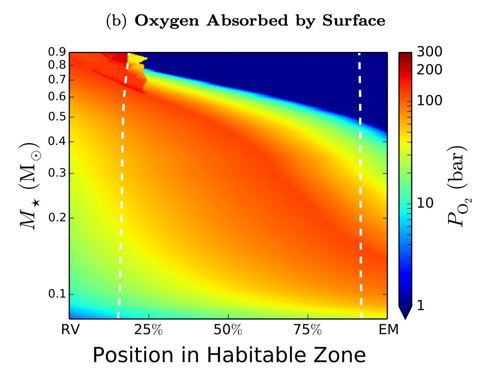

Figure 2
Same as the previous figure, but showing the total amount of oxygen
in bars produced by photolysis and retained by the planet.
For a planet with an Earth-like composition, this oxygen will be
absorbed at the surface to form iron oxides.
Dark blue corresponds to insignificant
oxygen buildup; dark red corresponds to nearly 200 bars of oxygen.
Planets that lose significant amounts of water also undergo
extreme surface
oxidation.
Depending on whether or not a deep, convective magma ocean is present,
the surface may not be able to absorb all of the oxygen produced in this way.
These planets may therefore have detectable levels of oxygen
in their atmospheres
for prolonged periods of time, potentially confusing future spectroscopic
searches for biosignatures in the HZ of M dwarfs.
